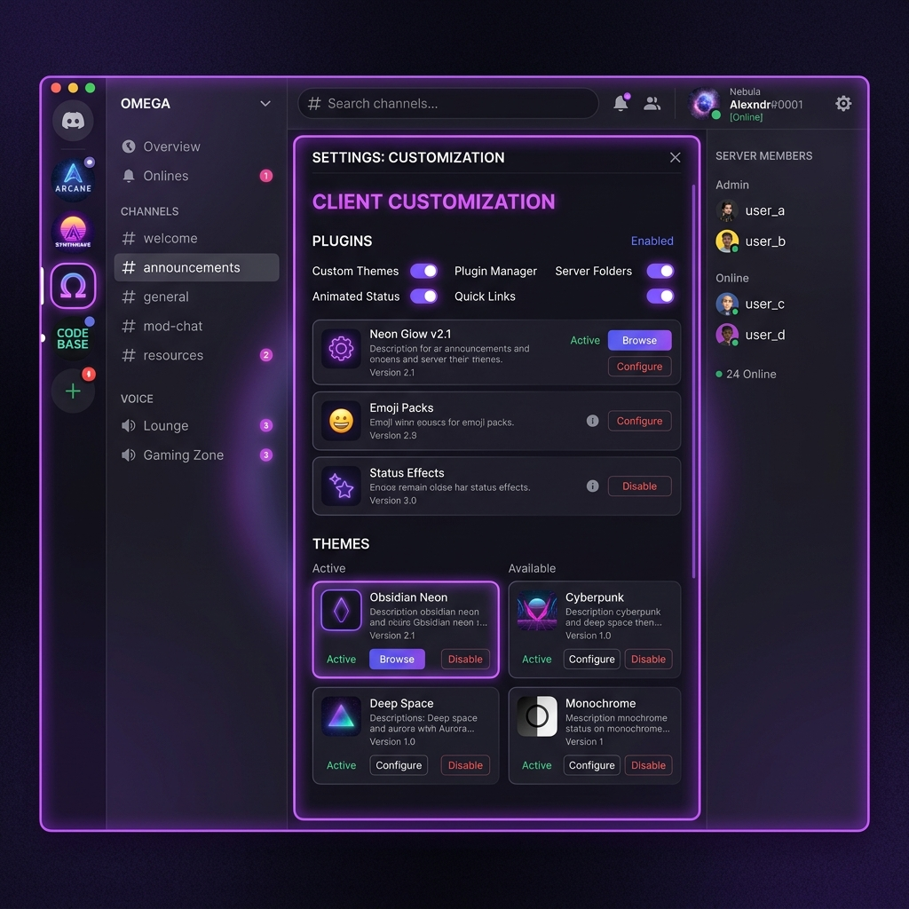

Elevate Your Discord Experience ارتقِ بتجربتك على ديسكورد
ArgusCord is the most advanced, lightweight client modification designed for performance and customization. Take control with 100+ built-in plugins, custom CSS themes, and complete privacy blocks. تعديل ArgusCord هو الخيار الأكثر تقدماً وخفة لتعديل عميل ديسكورد، مصمم للأداء العالي والتخصيص الكامل. تحكم في حسابك مع أكثر من 100 إضافة مدمجة، ثيمات مخصصة، وحظر كامل للتتبع.

Packed with Premium Features مميزات احترافية متكاملة
Everything you need to customize your Discord client, built with modern standards and optimized for speed. كل ما تحتاجه لتخصيص ديسكورد الخاص بك، مبني بمعايير حديثة ومحسن لتوفير أقصى سرعة ممكنة.
Client-Side Nitro ميزات نيترو محلياً
Unlock high-definition screensharing, high-fps streams, custom client emojis, and animated avatars locally for free. افتح مشاركة الشاشة بدقة عالية، البث بإطارات عالية، استخدام الرموز التعبيرية المخصصة، والصور الرمزية المتحركة محلياً مجاناً.
100+ Built-in Plugins أكثر من 100 إضافة مدمجة
Toggle premium utilities instantly: Spotify controls, typing indicator blocks, deleted message logs, and hidden channels. فعل الأدوات الاحترافية فوراً: أزرار التحكم في Spotify، إخفاء مؤشر الكتابة، سجل الرسائل المحذوفة، وقراءة القنوات المخفية.
Theme Engine محرك الثيمات والتصميم
Apply fully customized layouts, custom backgrounds, and glassmorphic designs using our built-in CSS and online theme library. قم بتطبيق قوالب مخصصة، خلفيات متميزة، وتصميمات شفافة زجاجية باستخدام محرر الـ CSS المدمج ومكتبة الثيمات.
Privacy-First Engine الأمان وحظر التتبع
Blocks all of Discord's internal tracking, telemetry, and analytics. Built in TypeScript to be extremely lightweight and fast. يحجب كل عمليات التتبع الداخلي وتحليلات البيانات الخاصة بديسكورد. مبني بلغة TypeScript ليكون خفيفاً جداً وسريعاً.
How It Works طريقة التثبيت والتشغيل
Follow these simple steps to install ArgusCord and enhance your Discord client. اتبع هذه الخطوات البسيطة لتثبيت ArgusCord وتعديل تطبيق ديسكورد الخاص بك في ثوانٍ.
Download Installer تحميل ملف التثبيت
Download our standalone installer executable (`ArgusCordInstaller.exe`) from the button below. قم بتحميل برنامج التثبيت المستقل الخاص بنا (`ArgusCordInstaller.exe`) من قسم التحميل بالأسفل.
Run the Setup شغّل البرنامج
Launch the installer. It does not require installation, has no external files, and runs instantly on Windows 10/11. اضغط مرتين لتشغيل ملف التثبيت. البرنامج يعمل مباشرة ولا يتطلب تثبيته أو وضع أي ملفات أخرى معه.
Select & Install اختر النسخة وثبّت
Select your Discord branch (Stable, PTB, Canary) from the dropdown and click Install. The tool handles the rest automatically. اختر نسخة ديسكورد المثبتة لديك (Stable أو PTB أو Canary) ثم اضغط على زر **Install** ليقوم البرنامج بالحقن تلقائياً.
Activate Plugins تفعيل الإضافات
Relaunch Discord, open User Settings, and look for the new ArgusCord tab to configure plugins & themes! افتح ديسكورد، اذهب إلى **إعدادات المستخدم**، وستجد قسماً جديداً باسم **ArgusCord** لتفعيل جميع الإضافات والثيمات المتاحة!
Get Started Today ابدأ الاستخدام اليوم
Download the ArgusCord installer to patch your Discord client on Windows in seconds. حمل برنامج تثبيت ArgusCord لتعديل تطبيق ديسكورد على ويندوز في ثوانٍ معدودة.
Requires Windows 10/11 & Discord client يتطلب نظام ويندوز 10/11 وتطبيق ديسكورد
Download Installer (.exe) تحميل برنامج التثبيت (.exe)